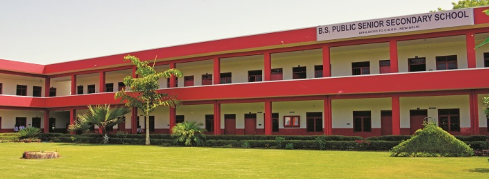

My Introduction
First of all, thank you for giving me this opportunity to speak a little about myself. I am Ankit Kumar from Hathras, Uttar Pradesh. I belong to a middle-class family hardly earning for a livelihood. Many of my neighbours work in the farm, and this is not their mistake. The opportunity to study was not given to them. But I am the only privileged one who went to college. That's why I am proud of my parents for thinking differently from the rest.
My school days
Since my birth, I had a problem in my lungs resulting in the inability to run far. That's why I started school late—I was 8 years old when I was in nursery class. I used to walk 4 km daily to go to and come from school. I jumped 4 classes (2, 4, 6, 8) to compensate for the age gap. I never attended class 11 due to financial problems at home. I studied the class 11 syllabus from YouTube (Alakh Pandey) and the class 12 syllabus from school and YouTube, because to pass class 12, I had to give the Board exam.
My JEE journey
I heard the name of JEE in class 12 from Alakh Sir while studying on YouTube. I went to Kanpur to prepare for JEE in 2024. I did not give the Jan attempt of JEE that year because my name on my Aadhaar card was different from my class 10 mark sheet. So, I gave the April attempt and got only an 88 percentile because I spent my last two months in Delhi to correct my Aadhaar card. So, I prepared again and got a 98.83 percentile the next year, and fortunately got into IIIT Lucknow in the IT branch.
My Journey vs age
| Year | Age | What I did |
|---|---|---|
| 2022 | 15 | Completed class 10th. |
| 2024 | 17 | Completed class 12th |
| 2025 | 18 | Preparation for JEE |
| 2026 | 19 | Give JEE and got IIIT Lucknow |
My Hobbies
- Fitness
- Exploring new ideas
- Singing
- Listening to Music
My schools


From All This
Difficulties faced by me
- Even after failing again and again, I keep working on myself.
- I also worked on my farm alongside my academics.
Advantages of being a farmer
- I have good strenght,endurance, and fitness.
- I have a liitle knowledge about farming.